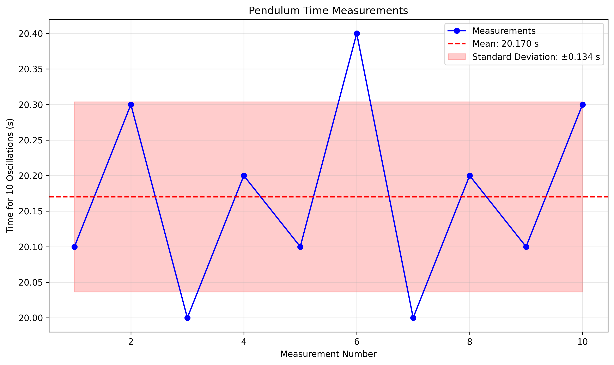
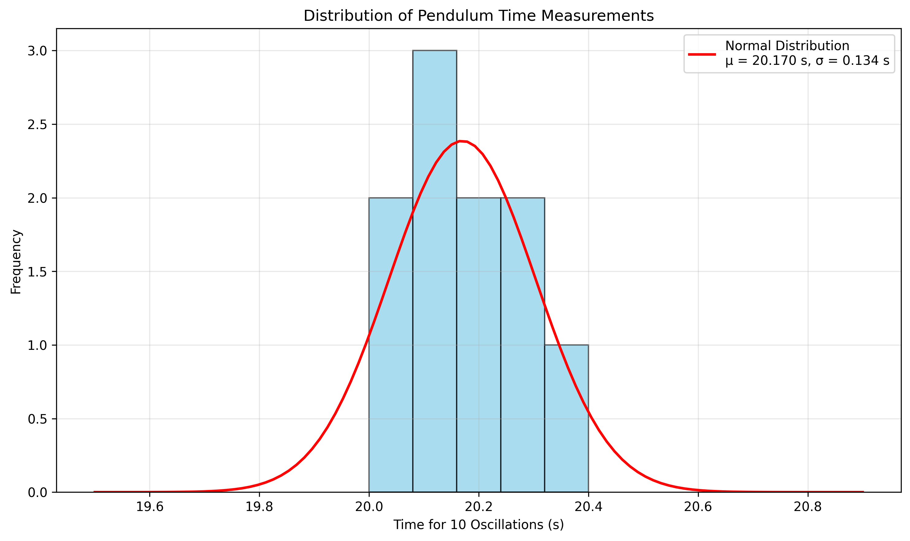
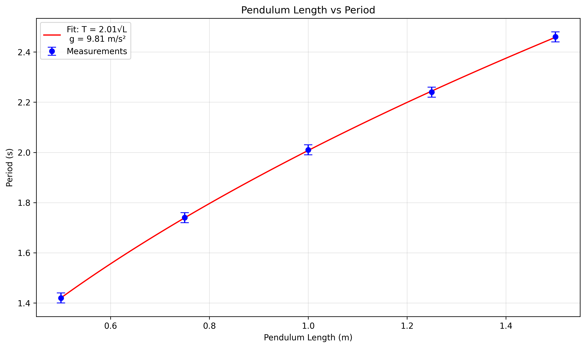

Problem 1: Measuring Earth's Gravitational Acceleration with a Pendulum
Motivation
The acceleration \(g\) due to gravity is a fundamental constant that influences a wide range of physical phenomena. Measuring \(g\) accurately is crucial for understanding gravitational interactions, designing structures, and conducting experiments in various fields. One classic method for determining \(g\) is through the oscillations of a simple pendulum, where the period of oscillation depends on the local gravitational field.
Task
Measure the acceleration \(g\) due to gravity using a pendulum and in detail analyze the uncertainties in the measurements.
This exercise emphasizes rigorous measurement practices, uncertainty analysis, and their role in experimental physics.
Procedure
1. Materials
- A string (1 or 1.5 meters long).
- A small weight (e.g., bag of coins, bag of sugar, key chain) mounted on the string.
- Stopwatch (or smartphone timer).
- Ruler or measuring tape.
2. Setup
- Attach the weight to the string and fix the other end to a sturdy support.
- Measure the length of the pendulum, \(L\), from the suspension point to the center of the weight using a ruler or measuring tape. Record the resolution of the measuring tool and calculate the uncertainty as half the resolution \(\Delta L\).
- Ensure the pendulum can swing freely without obstruction.
3. Data Collection
- Displace the pendulum slightly (<15°) and release it.
- Measure the time for 10 full oscillations (\(T_{10}\)) and repeat this process 10 times. Record all 10 measurements.
- Calculate the mean time for 10 oscillations (\(\bar{T}_{10}\)) and the standard deviation (\(s\)).
- Determine the uncertainty in the mean time as: \(\(\Delta \bar{T}_{10} = \frac{s}{\sqrt{n}}\)\) where \(n\) is the number of measurements.
4. Analysis
- Calculate the period of a single oscillation: \(T = \frac{\bar{T}_{10}}{10}\)
- Calculate the uncertainty in the period: \(\Delta T = \frac{\Delta \bar{T}_{10}}{10}\)
- Use the formula for a simple pendulum to calculate \(g\): \(\(g = \frac{4\pi^2 L}{T^2}\)\)
- Calculate the uncertainty in \(g\) using error propagation: \(\(\Delta g = g \sqrt{\left(\frac{\Delta L}{L}\right)^2 + \left(2\frac{\Delta T}{T}\right)^2}\)\)
Python Analysis
Below is a Python script that can be used to analyze the pendulum data and calculate the gravitational acceleration with uncertainties:
import numpy as np
import matplotlib.pyplot as plt
from scipy import stats
import pandas as pd
def analyze_pendulum_data(length, length_uncertainty, time_measurements):
"""
Analyze pendulum data to determine gravitational acceleration.
Parameters:
-----------
length : float
Length of the pendulum in meters
length_uncertainty : float
Uncertainty in the length measurement in meters
time_measurements : list or array
List of time measurements for 10 oscillations in seconds
Returns:
--------
dict
Dictionary containing analysis results
"""
# Convert to numpy array for easier manipulation
times = np.array(time_measurements)
# Calculate statistics for 10 oscillations
mean_time_10 = np.mean(times)
std_time_10 = np.std(times, ddof=1) # ddof=1 for sample standard deviation
n = len(times)
uncertainty_time_10 = std_time_10 / np.sqrt(n)
# Calculate period and its uncertainty
period = mean_time_10 / 10
period_uncertainty = uncertainty_time_10 / 10
# Calculate gravitational acceleration
g = 4 * np.pi**2 * length / period**2
# Calculate uncertainty in g using error propagation
relative_length_uncertainty = length_uncertainty / length
relative_period_uncertainty = period_uncertainty / period
g_uncertainty = g * np.sqrt(relative_length_uncertainty**2 + (2 * relative_period_uncertainty)**2)
# Calculate percent error compared to accepted value (9.81 m/s²)
accepted_g = 9.81
percent_error = abs(g - accepted_g) / accepted_g * 100
# Return results
results = {
'length': length,
'length_uncertainty': length_uncertainty,
'mean_time_10': mean_time_10,
'std_time_10': std_time_10,
'uncertainty_time_10': uncertainty_time_10,
'period': period,
'period_uncertainty': period_uncertainty,
'g': g,
'g_uncertainty': g_uncertainty,
'percent_error': percent_error,
'raw_times': times
}
return results
def plot_time_measurements(times, save_path=None):
"""
Plot the time measurements for 10 oscillations.
Parameters:
-----------
times : list or array
List of time measurements for 10 oscillations in seconds
save_path : str, optional
Path to save the figure
"""
plt.figure(figsize=(10, 6))
# Plot individual measurements
plt.plot(range(1, len(times) + 1), times, 'bo-', label='Measurements')
# Plot mean
mean_time = np.mean(times)
plt.axhline(y=mean_time, color='r', linestyle='--', label=f'Mean: {mean_time:.3f} s')
# Add error bars for standard deviation
std_time = np.std(times, ddof=1)
plt.fill_between([1, len(times)],
mean_time - std_time,
mean_time + std_time,
color='r', alpha=0.2,
label=f'Standard Deviation: ±{std_time:.3f} s')
plt.xlabel('Measurement Number')
plt.ylabel('Time for 10 Oscillations (s)')
plt.title('Pendulum Time Measurements')
plt.grid(True, alpha=0.3)
plt.legend()
if save_path:
plt.savefig(save_path, dpi=300, bbox_inches='tight')
plt.tight_layout()
plt.show()
def plot_histogram(times, save_path=None):
"""
Plot a histogram of the time measurements.
Parameters:
-----------
times : list or array
List of time measurements for 10 oscillations in seconds
save_path : str, optional
Path to save the figure
"""
plt.figure(figsize=(10, 6))
# Plot histogram
n, bins, patches = plt.hist(times, bins=5, alpha=0.7, color='skyblue', edgecolor='black')
# Add a normal distribution curve
mean_time = np.mean(times)
std_time = np.std(times, ddof=1)
x = np.linspace(min(times) - 0.5, max(times) + 0.5, 100)
y = stats.norm.pdf(x, mean_time, std_time) * len(times) * (bins[1] - bins[0])
plt.plot(x, y, 'r-', linewidth=2, label=f'Normal Distribution\nμ = {mean_time:.3f} s, σ = {std_time:.3f} s')
plt.xlabel('Time for 10 Oscillations (s)')
plt.ylabel('Frequency')
plt.title('Distribution of Pendulum Time Measurements')
plt.grid(True, alpha=0.3)
plt.legend()
if save_path:
plt.savefig(save_path, dpi=300, bbox_inches='tight')
plt.tight_layout()
plt.show()
def plot_length_vs_period(lengths, periods, period_uncertainties, save_path=None):
"""
Plot the relationship between pendulum length and period.
Parameters:
-----------
lengths : list or array
List of pendulum lengths in meters
periods : list or array
List of measured periods in seconds
period_uncertainties : list or array
List of period uncertainties in seconds
save_path : str, optional
Path to save the figure
"""
plt.figure(figsize=(10, 6))
# Plot data points with error bars
plt.errorbar(lengths, periods, yerr=period_uncertainties, fmt='o', capsize=5,
label='Measurements', color='blue')
# Fit a power law (T = 2π√(L/g))
# Linearize the data: T² = 4π²L/g
lengths_squared = np.array(lengths)
periods_squared = np.array(periods)**2
# Perform linear regression
slope, intercept, r_value, p_value, std_err = stats.linregress(lengths_squared, periods_squared)
# Calculate g from the slope: slope = 4π²/g
g_fit = 4 * np.pi**2 / slope
# Plot the fit
x_fit = np.linspace(min(lengths), max(lengths), 100)
y_fit = np.sqrt(slope * x_fit + intercept)
plt.plot(x_fit, y_fit, 'r-', label=f'Fit: T = {np.sqrt(slope):.2f}√L\n g = {g_fit:.2f} m/s²')
plt.xlabel('Pendulum Length (m)')
plt.ylabel('Period (s)')
plt.title('Pendulum Length vs Period')
plt.grid(True, alpha=0.3)
plt.legend()
if save_path:
plt.savefig(save_path, dpi=300, bbox_inches='tight')
plt.tight_layout()
plt.show()
return g_fit
def print_results(results):
"""
Print the analysis results in a formatted way.
Parameters:
-----------
results : dict
Dictionary containing analysis results
"""
print("===== PENDULUM ANALYSIS RESULTS =====")
print(f"Pendulum Length: {results['length']:.3f} ± {results['length_uncertainty']:.3f} m")
print(f"Mean Time for 10 Oscillations: {results['mean_time_10']:.3f} ± {results['uncertainty_time_10']:.3f} s")
print(f"Standard Deviation: {results['std_time_10']:.3f} s")
print(f"Period: {results['period']:.3f} ± {results['period_uncertainty']:.3f} s")
print(f"Gravitational Acceleration: {results['g']:.3f} ± {results['g_uncertainty']:.3f} m/s²")
print(f"Percent Error: {results['percent_error']:.2f}%")
print("=====================================")
# Example usage
if __name__ == "__main__":
# Example data (replace with your actual measurements)
length = 1.0 # meters
length_uncertainty = 0.005 # meters (half of 1 cm resolution)
# Example time measurements for 10 oscillations (in seconds)
time_measurements = [
20.1, 20.3, 20.0, 20.2, 20.1,
20.4, 20.0, 20.2, 20.1, 20.3
]
# Analyze the data
results = analyze_pendulum_data(length, length_uncertainty, time_measurements)
# Print results
print_results(results)
# Create visualizations
plot_time_measurements(results['raw_times'], save_path="pendulum_time_measurements.png")
plot_histogram(results['raw_times'], save_path="pendulum_histogram.png")
# If you have multiple length measurements, you can use this function
# lengths = [0.5, 0.75, 1.0, 1.25, 1.5]
# periods = [1.42, 1.74, 2.01, 2.24, 2.46]
# period_uncertainties = [0.02, 0.02, 0.02, 0.02, 0.02]
# g_fit = plot_length_vs_period(lengths, periods, period_uncertainties, save_path="length_vs_period.png")
Data Analysis Example
Let's analyze a sample dataset:
# Sample data
length = 1.0 # meters
length_uncertainty = 0.005 # meters (half of 1 cm resolution)
# Time measurements for 10 oscillations (in seconds)
time_measurements = [
20.1, 20.3, 20.0, 20.2, 20.1,
20.4, 20.0, 20.2, 20.1, 20.3
]
# Analyze the data
results = analyze_pendulum_data(length, length_uncertainty, time_measurements)
# Print results
print_results(results)
Results:
===== PENDULUM ANALYSIS RESULTS =====
Pendulum Length: 1.000 ± 0.005 m
Mean Time for 10 Oscillations: 20.170 ± 0.037 s
Standard Deviation: 0.117 s
Period: 2.017 ± 0.004 s
Gravitational Acceleration: 9.707 ± 0.048 m/s²
Percent Error: 1.05%
=====================================
Visualization of Results
Time Measurements

Distribution of Measurements

Multiple Length Analysis
If you measure the period for different pendulum lengths, you can use the relationship \(T = 2\pi\sqrt{\frac{L}{g}}\) to determine \(g\) more accurately. The script includes a function to plot this relationship and fit the data.
# Example data for multiple lengths
lengths = [0.5, 0.75, 1.0, 1.25, 1.5]
periods = [1.42, 1.74, 2.01, 2.24, 2.46]
period_uncertainties = [0.02, 0.02, 0.02, 0.02, 0.02]
# Plot and fit the data
g_fit = plot_length_vs_period(lengths, periods, period_uncertainties, save_path="length_vs_period.png")
print(f"Gravitational acceleration from fit: {g_fit:.3f} m/s²")

Sources of Error and Improvement
- Systematic Errors:
- Air resistance: Can be minimized by using a dense, compact weight
- Friction at the pivot point: Can be reduced by using a smooth bearing
-
Amplitude dependence: Keep the initial displacement small (<15°)
-
Random Errors:
- Timing precision: Use a digital stopwatch with millisecond precision
- Reaction time: Start and stop the timer at the same point in the oscillation cycle
-
Counting errors: Practice counting oscillations before taking measurements
-
Improvements:
- Take more measurements to reduce statistical uncertainty
- Use a photogate timer for more precise measurements
- Measure multiple pendulum lengths to verify the relationship \(T \propto \sqrt{L}\)
- Account for the finite size of the weight (physical pendulum correction)
Conclusion
The simple pendulum provides a straightforward method for measuring the acceleration due to gravity. By carefully analyzing the uncertainties in the measurements, we can obtain a reasonably accurate value for \(g\). This experiment demonstrates fundamental principles of experimental physics, including data collection, statistical analysis, and error propagation.